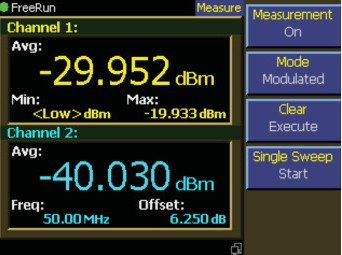
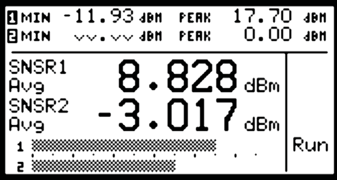
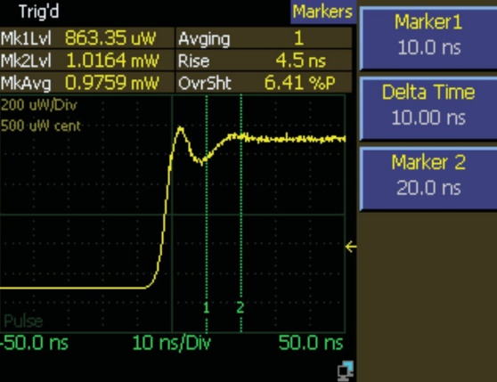
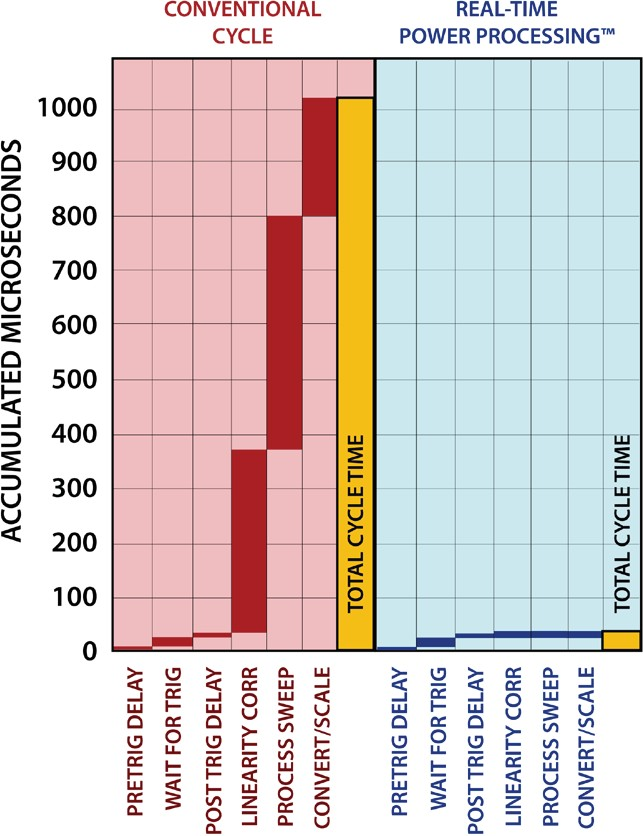
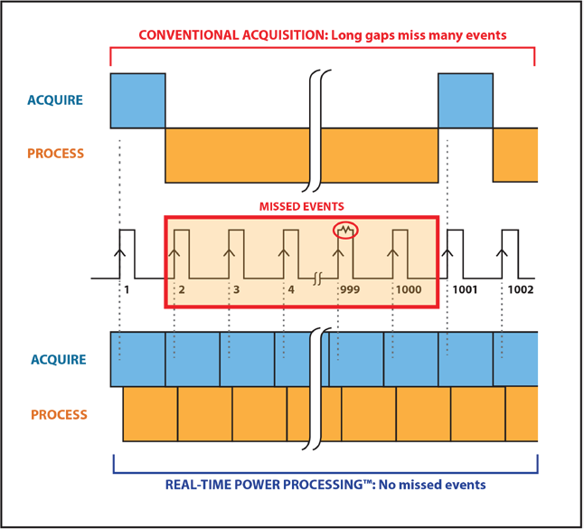
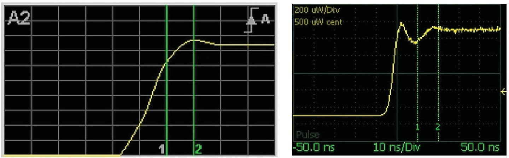
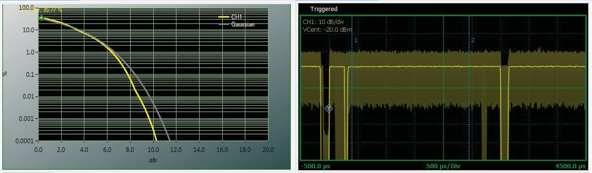
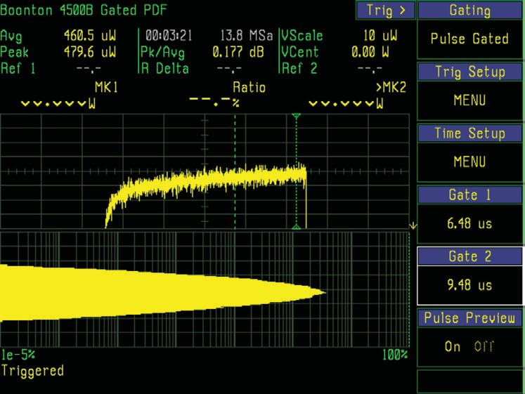
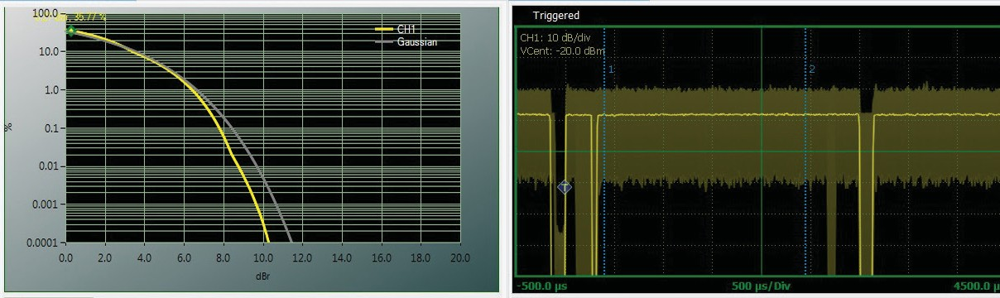
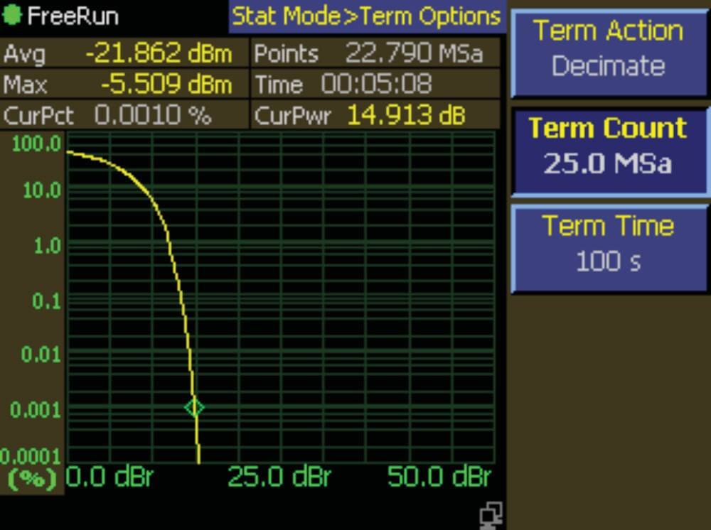

Chapter 6: RF Power Analysis
RF power measurement breaks down into three broad categories. Continuous power measurement is free-running, with no pauses in acquisition, and results delivered as they come. The primary measurement is usually average power, sometimes with peak as well. Triggered pulse or burst acquisition is discontinuous, synchronized with the signal, and once initiated runs for a defined window before stopping and delivering the result. The output is generally a power-versus-time representation of the signal, often with advanced time and power analysis. Statistical power analysis is a relatively newer method in which a large population of power samples is acquired and analyzed by frequency of occurrence rather than time of occurrence. Samples may be acquired free-running or synchronized with the signal.
This chapter walks through each in detail. All power meters support at least one of these methods. Advanced peak power meters support all three. Which mode is appropriate depends primarily on the signal being measured and on which parameters of that signal matter most.




6.1 Continuous Power Measurement
Continuous mode is the most common. Operation is similar to a digital multimeter. The sensor is connected to a CW or modulated signal, and the meter displays the average power. The display can be numeric (with selectable resolution) or graphical, often a bargraph or meter scale. Units are dBm or watts.
CW and average diode sensors, thermal sensors, and other low-bandwidth true-average sensors all operate in continuous mode, often called CW mode for these sensor types because operation is tailored to CW signals. Modulated signals can also be accommodated, but the operator must take care to keep the signal within the square-law region if a CW diode sensor is used. Modern instruments perform continuous mode measurements with a low-noise, low-bandwidth, high-resolution analog channel that processes and digitizes the sensor output. All shaping and corrections are then performed by a microprocessor to yield an accurate power value.
Peak power sensors can also operate in continuous mode. Some peak meters call this Modulated Mode because peak sensors offer more flexibility with modulated signals. The circuitry is somewhat different. A high-bandwidth amplifier and high-speed digitizer follow the detector, and the digitized samples are linearized and averaged together to yield the average power. Additional parameters such as peak and minimum power become available with suitable processing. The basic operating idea is the same: power is continuously measured and displayed.
Continuous-mode instruments generally measure power at a relatively slow rate, from about 10 Hz to a few kHz, then apply a time-integration filter to reduce noise further at low signal levels. The filter is also useful for reducing displayed power fluctuations caused by modulation. For periodic signals, set the averaging time equal to an integer number of modulation cycles. Chapter 8 discusses signal filtering in detail.
In addition to a numeric power display, continuous-mode measurements can be presented graphically as power versus time, subject to the limitations of the measurement rate. A strip-chart display showing power as a scrolling line is the most useful presentation. Some instruments span seconds to hours on a strip chart, which is valuable for observing a drifting signal, especially in conjunction with appropriate filtering.
Ratiometric measurement is another common feature. Most power meters allow the user to store a reference level from which a power ratio is computed and displayed, usually in dBr, with 0.00 dBr representing power equal to the reference level. For dual-channel power meters, displaying the ratio between two channels is straightforward. This is useful for computing gain or attenuation. When used with a directional coupler, the ratio between channels equals the return loss of the signal passing through the coupler.
The primary display can be the actual sensor signal amplitude, an offset amplitude, or a mathematical function (ratio, sum, difference) of the sensor signal and a second sensor or stored reference. The Berkeley Nucleonics PowerEye software supports all of these presentations from any 12100 sensor over USB.
6.2 Triggered and Pulse Analysis
For periodic or pulsed signals, it is often necessary to analyze the power for a portion of the waveform or a specific region of a pulse or pulse burst. Before walking through the analysis methods, a brief review of power measurement fundamentals is useful.
Unmodulated carrier power. The average power of an unmodulated carrier (a continuous, constant-amplitude sinewave) is also called CW power. For a known load impedance Z_LOAD and applied voltage V_RMS, average power is:
P = V_RMS² / Z_LOAD watts
Power meters designed to measure CW power can use thermoelectric detectors that respond to the heating effect of the signal, or diode detectors that respond to the RMS voltage. With careful calibration, accurate measurements are possible across a wide range of input power levels.
Modulated carrier power. The average power of a modulated carrier with varying amplitude can be measured accurately by an average or CW power meter with a thermoelectric detector. The lack of sensitivity limits the range. Diode detectors can be used at low power levels within the square-law region (no peaks higher than about -20 dBm). At higher levels the diode responds proportionally to voltage rather than power, and significant error in the average power reading results.
Pulse power. Pulse power refers to the power measured during the on-time of pulsed RF signals. Traditionally these signals were measured in two steps: an average-responding sensor (thermoelectric or square-law diode) measured the average power, and the average reading was divided by the duty cycle to obtain pulse power.
P_PULSE = P_AVERAGE / Duty Cycle, where Duty Cycle = Pulse Width / Pulse Period.
Pulse power computed this way provides useful results for ideal periodic rectangular pulse waveforms, but is inaccurate for distorted pulse shapes (overshoot, droop) or when pulse period and width are not perfectly uniform.
Peak power. Peak power meters perform measurements that overcome the limitations of the duty-cycle method and provide both peak and average power readings for all types of modulated carriers. Fast-responding diode detectors track the RF envelope to produce a wideband video signal sampled at high bandwidth and high data rate by the meter. Sampled detector points are converted to instantaneous power in watts on an individual basis using stored calibration information.
Once samples have been converted to linear power, the mean of all (or a subset) is computed to yield the true average power without restriction to the diode's square-law region. A time-domain reconstruction of the signal envelope is created by assembling the samples in sequence into a display buffer. For repetitive signals, equivalent-time or interleaved sampling techniques yield time resolutions that exceed the raw sample rate when synchronized by an internal or external trigger. Repetitive signals also permit synchronous filtering (trace or video filtering) of the resulting waveform, discussed below.


Peak power meters often refer to this measurement mode as Triggered or Pulse Mode. Operation is similar to a modern digital storage oscilloscope. Power samples are stored in a circular memory buffer until a trigger signal is received. The samples, with the desired relationship to the trigger, are then selected and processed to obtain a power-versus-time trace.
The trigger signal can be a separately applied external pulse, or it can be generated by the RF signal's amplitude crossing a defined threshold in either direction. The trigger source, level, and polarity are programmable, and oscilloscope-like settings such as trigger delay time and trigger holdoff are typically available.
Early peak power meters did not have memory. They used a variable delay generator and sampled the input signal at some defined period after the trigger to yield "power at a time offset." To reconstruct the waveform, the delay time was incremented in small steps in successive triggers, and the resulting array of power points assembled in order on a display. This technique permitted wide measurement bandwidth using the slow A/D converters of the time period.
Modern peak power meters acquire the signal at very high conversion rates, typically many MHz, and large acquisition buffers permit display of both pre- and post-trigger portions of the waveform. For each triggered sweep, data acquisition into the circular buffer restarts and runs at high speed until a trigger edge is detected and all post-trigger samples are acquired. At that point acquisition typically stops and the buffer is processed and displayed before another trace is restarted.
Real-time processing techniques such as Berkeley Nucleonics' Real-Time Power Processing™ reduce total cycle time significantly. By combining a dedicated acquisition engine, hardware trigger, integrated sample buffer, and parallel processing architecture, real-time power processing performs most of the sweep processing steps simultaneously, beginning immediately after the trigger instead of waiting for the end of the acquisition cycle. Key processing steps run in parallel and keep pace with the signal acquisition. With no added computational overhead to prolong the sweep cycle, the sample buffer cannot overflow, so there is no need to halt acquisition for trace processing. This means gap-free signal acquisition and guarantees that intermittent signal phenomena (transients, dropouts, interference) will be reliably captured and analyzed. These events are most often missed by conventional power meters because of acquisition gaps during processing.



Triggering options. Like a DSO, several trigger options exist. Auto-trigger modes force a trigger when no edges are detected, but synchronize with the signal once edges appear. A peak-to-peak trigger mode automatically sets the trigger level based on the input signal. The most advanced peak power meters have complex trigger generators that can do trigger arming and qualification on counted signal events or time delays. Some have programmable fence and exclusion intervals to assist triggering on burst signals.
Display timebases range down to a few ns/div, limited generally by the video bandwidth and time resolution of the instrument. Time resolutions of 100 ps or better are available on the fastest peak power meters and are critical to accurate waveform reconstruction and pulse measurement.
Programmable time markers (cursors) can be positioned on any portion of the displayed trace to mark regions of interest for detailed analysis. Cursor measurements include the power at each marker plus a series of parameters for the interval between the markers, usually at least average and peak power. This is useful for examining the power during a radar pulse or digital communication burst when only the central region matters. By adjusting trigger delay and other parameters, you can measure the power of burst signals such as the specific frames of an 802.11ac WiFi or LTE-TDD signal, or specific timeslots of TDMA signals such as GSM and EDGE.
Trigger holdoff allows burst synchronization even when there is more than one edge in the burst that satisfies the trigger level. Set the holdoff time to slightly shorter than the burst's repetition interval to guarantee that triggering occurs at the same point in the burst on each sweep.
Automatic pulse parameter measurement. For periodic waveforms, automatic measurement of waveform parameters is available in pulse mode. Once a stable, periodic signal is detected, the instrument locates the waveform transitions and calculates pulse frequency, width, duty cycle, rise and fall times, top and bottom power, pulse-on power, overshoot, and full-cycle average power.
Trace averaging is helpful for low-level measurements due to the wideband noise of peak power sensors. Unlike continuous mode (in which measurement bandwidth is reduced by averaging more samples), pulse mode uses synchronous averaging, also called video averaging. Each acquisition sample is averaged with other samples at exactly the same time offset relative to the trigger, effectively averaging each trace with previous traces while maintaining time alignment. Video averaging works best for periodic waveforms. Chapter 8 discusses the process and benefits in detail.
Pulse mode of advanced peak power meters often includes the same kinds of features found in advanced digital oscilloscopes: deep memory, fast waveform update, waveform zoom, trace storage and recall, and mathematical functions between traces.

6.3 Statistical Power Analysis
For pulsed and periodic waveforms, the signal's power envelope can be reconstructed and analyzed in the time domain to provide a considerable amount of useful information. For continuously modulated signals, or periodic signals with noise-like modulation within bursts or packets, it becomes difficult or impossible to trigger from the signal itself or to extract useful information in the time domain. Simple continuous-mode processing yields the average and sometimes peak power, but often more information is available through alternative acquisition and processing methods.
Many modern communication signals fall into this category because of their noise-like, digitally modulated formats. CDMA, OFDM, and various forms of QAM are examples. For these signals, statistical power analysis often makes more sense than time-domain analysis. When statistical analysis is performed, power samples are acquired and analyzed by how frequently each power value occurs rather than precisely when it occurs. A large sample population is acquired (asynchronously or synchronously) and sorted by power into bins to yield a histogram. The more samples in the population, the finer the histogram resolution.
Statistical power analysis is best for signals with these characteristics:
- Moderate signal level above about -40 dBm.
- Digitally modulated signals, especially noise-like formats such as CDMA (and its extensions) or OFDM such as 802.11ac and LTE, when probability information is helpful.
- Any signal with random, infrequent peaks, when you need to know peak probability, peak-to-average power ratio (PAPR), and crest factor.
Statistical presentations. There are several common ways to view statistical power measurements:
A power histogram is the simplest. Samples are sorted into equal-width bins of any convenient size. Bin divisions are most often logarithmic in power, with each bin ranging an equal number of dBm. Bin depths (maximum count values) can reach or exceed 32 bits (4 billion counts).
The Probability Density Function (PDF) is essentially a continuous function similar to an infinite-resolution (zero bin width) histogram. The PDF cannot directly return absolute signal measurements, but its shape gives a qualitative indication of the power distribution. A multi-level signal such as QAM shows up as a distinct hump at each power level, useful for visualizing system linearity.
The Cumulative Distribution Function (CDF) is the integral of the PDF. Its value is monotonic and increases from 0.0 to 1.0, representing the probability that the power is at or below a given level. Textbook representations show power on the X axis and probability on the Y axis. A CDF value of 0.0 is at the minimum power point and 1.0 is at the maximum (absolute peak) power.
The Complementary Cumulative Distribution Function (CCDF), sometimes shown as 1-CDF, is the arithmetic inverse of the CDF, representing the probability that the power is at or above a given level. A CCDF value of 0.0 is at the maximum power and 1.0 is at the minimum. CCDF is more often used for power analysis because peak power is generally of more interest than minimum power, and it is convenient to expand about the origin.
The CCDF is usually shown in graphical format, with log power (dBm) on the X axis and log probability on the Y axis. For analyzing communication signals, normalize the power to the average so the X axis represents the number of dB above or below the average power level (relative dB, dBr). This is useful when only the shape of the CCDF matters and not its absolute power value. In this case, a power value of 0 dBr is the average power, and a CCDF value of 0.0 represents the peak-to-average power ratio.
Some power meters invert the X and Y axes to maintain the power measurement convention of displaying amplitude on the Y axis. This is particularly useful when presenting a histogram or PDF alongside a corresponding time-domain trace. Both orientations present the same information.
Tabular CCDF values are also common. Power (relative or absolute) is treated as the dependent variable. A "0.01% CCDF power level" indicates the peak-to-average threshold above which only 0.01% of the power samples (probability of 1e-4) fall. A typical CDMA signal might have a 0.01% CCDF value of 8.7 dBr, indicating that one of every 10,000 power points is more than 8.7 dB above average power.
These measurements are useful because the expected CCDF shape can be computed from the data patterns and modulation format, or a CCDF for an undistorted "gold" signal can be acquired, analyzed, and stored. The CCDF of the actual signal is then measured at various points in the signal chain (for example, immediately after a power amplifier). When the curves are overlaid, distortion is immediately evident from the difference in shapes. Mild peak compression appears as the output CCDF falling off at a steeper rate than the input CCDF as peak-to-average ratio increases. Absolute limiting (clipping) appears as the CCDF becoming vertical. Statistical analysis for amplifier testing is discussed further in Section 8.3.


Gated statistics. Many modern signals are transmitted in bursts or timeslots and use noise-like digital modulation formats that benefit from statistical analysis. For these protocols, it is helpful to acquire the statistical population synchronously, triggered or gated externally or by the signal itself, so that acquired samples represent only specific intervals in time. GSM-EDGE is one example. It is most useful to acquire data only during the payload portion of the timeslot. WiFi and other signals have similar requirements. A burst often begins with a training sequence that skews the distribution in undesirable ways if those samples are included in the population.
High-end peak power analyzers offer the ability to operate in two modes simultaneously. The instrument is set up for a basic pulse-mode acquisition so the triggered waveform is visible. All triggering features may be used. Cursors are positioned on the waveform to indicate the interval over which to perform statistical analysis. Only power samples occurring within that interval are included in the population. Samples outside the interval (burst off-time, rising and falling edges, pilots, training sequences) are discarded and do not skew the distribution.
Statistical acquisition size. One weakness of statistical power analysis is that the power bins used to acquire data are not of infinite depth. The faster data points are acquired, the sooner the bins fill. Eventually the maximum count limit is reached and acquisition can no longer proceed. A decision must be made on how to handle the situation.
The simplest option is to consider the acquisition complete and stop adding new samples. Depending on whether statistical measurements will be required immediately, it may be more appropriate to clear the population and restart acquisition. The downside of flush-and-restart is that there is a short period at the start of each acquisition when the population is small and the statistical resolution is extremely coarse. If a CCDF measurement at a very small probability is needed, there may not be enough samples for a statistically valid return value.

To remedy this, a portion of the distribution can be discarded, or "decimated." All power bins are scaled by an equal value, for example 0.5. This is computationally simple and fast. Binary count values in each bin are right-shifted by one bit. Once all the count bins have been halved, acquisition continues. The shape of the statistical distribution is not affected except at the very rarest power values, where binary roundoff or truncation becomes significant.
The effect functions as a CCDF filter. The distribution is most heavily weighted by recent events, and older events are eventually decimated off. The time it takes is proportional to the count at which decimation occurs, and inversely proportional to the sample rate.

Many signals yield meaningful CCDF results with several to a few tens of megasamples, so it is possible to make use of decimation for less than a "full" bin. Peak power meters may include the option to terminate, restart, or decimate statistical acquisition after a user-defined population size (Terminal Count) or time interval (Terminal Time).

Engineer's corner. For long-term average-power statistics where the question is "what is the distribution of mean readings over hours or days," the Berkeley Nucleonics 12100 series is purpose-built. Millions of timestamped true-RMS readings into internal memory, downloaded as CSV for offline analysis. Drift, duty-cycle, and compliance studies that used to require rack-mounted data loggers now run from a sensor that fits in your pocket.
Check your understanding
Three quick questions on RF power analysis. Your answers save on this device.